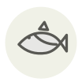

Sōda-bushi (auxide séchée) ✦
Sōda-bushi
| Nom latin | Auxis rochei |
|---|---|
| Famille | Poissons & fruits de mer |
| Origine | Kōchi et Shizuoka, Japon |
| Saison | Toute l’année |
| Goût | Umami · Charnu · Fumé · Riche |
| Prix courant | 50–90 €/kg |
Ce que c’est
Sous le nom de sōda-gatsuo se cachent deux petits thons, et c’est le plus rond, Auxis rochei, que recherchent les sécheurs : plus de muscle rouge, plus d’acide inosinique, moins de gras. Ce muscle rouge explique le bouillon brun, au fer marqué — exactement le goût sur lequel un soba de Tokyo bâtit sa sauce de trempage, et le mauvais goût pour un consommé clair.
En cuisine
Employez-le comme charpente, pas comme bouillon entier : un tiers de sōda-bushi pour deux tiers de katsuobushi donne le corps sans la finale métallique. Infusez plus longtemps que la bonite, cinq à huit minutes, les copeaux étant taillés plus épais.
S’accorde avec
Nouilles soba Sauce soja koikuchi Mirin (hon-mirin) Kombu Poireau japonais Katsuobushi
Une erreur ici, ou un oubli ? Dites-le nous